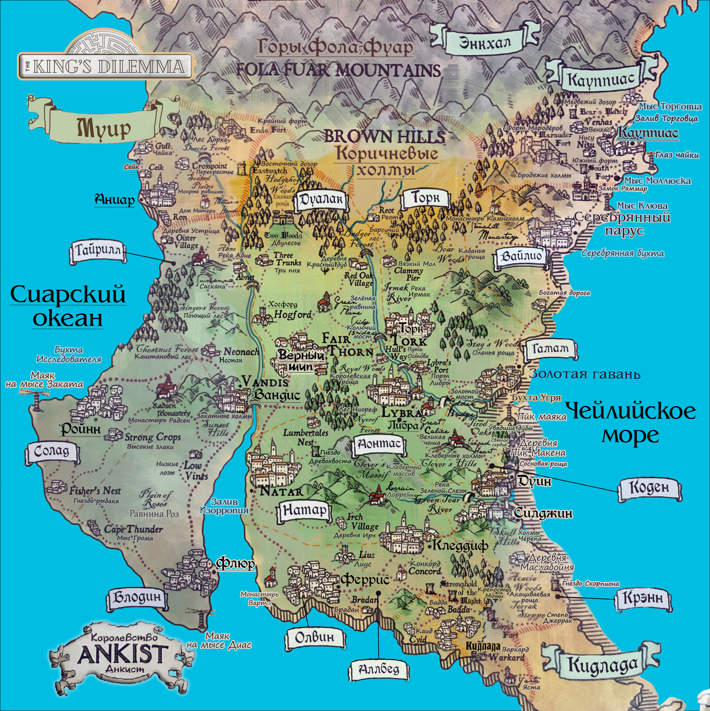
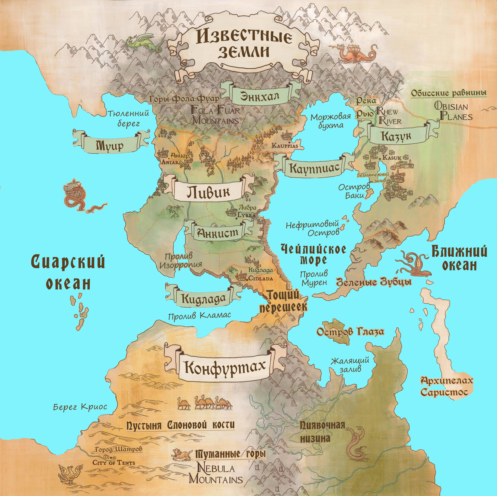
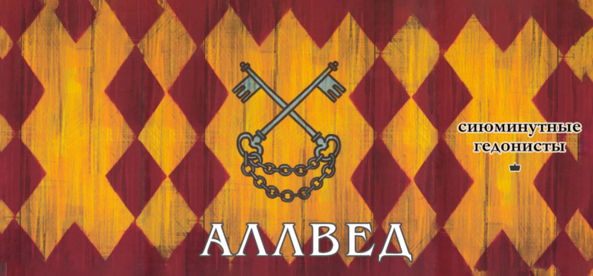

Хроники Анкиста
Добро пожаловать в Анкист. Садитесь у огня, наливайте вина — и слушайте.
📜 Содержание

🌍 География и История
🌎 Континент Ливик
Действие игры разворачивается на северном континенте Ливик — изрезанном реками, покрытом лесами и опалённом войнами. Здесь, среди плодородных долин и бесплодных степей, раскинулось Королевство Анкист — молодой гигант, которому нет ещё и двух веков.
Но не обманывайтесь его молодостью. Анкист — это сплав из десятков независимых королевств, проглоченных войной и дипломатией. Каждое герцогство, каждая марка — это осколок чьей-то гордости, чьей-то крови, чьей-то мечты. И все они теперь преклоняют колени перед королём в Либре — столице, где мраморные залы соседствуют с трущобами, а шёпот советников громче королевского указа.
Границы на севере и юге Анкиста чётко не определены; ничейные приграничные территории полны налётчиков, головорезов и агрессивных кочевых племён.
🏛 История мира: Тени прошлого
Земли нынешнего Анкиста, как и большинство других известных земель, долгие века правили несколько исчезнувших цивилизаций. Во многих городах королевства имеются оставшиеся после них грандиозные руины.
1. Салаанский Союз (около 800 лет назад)
Останки этой великой цивилизации сохранились лишь на берегах Сиарского океана и Чейлийского моря. Там можно встретить развалины исполинских маяков и верфей, приспособленные за долгие века для нужд более поздних городов. Поговаривают, что в древние времена это государство правило всем миром.
2. Саббиянская Лига (около 1100 лет назад)
На юге Анкиста можно увидеть ещё более древние руины. В южных городах вокруг них построено много рыночных площадей. Известно и о нескольких выдержавших испытание временем обелисках из резного песчаника. Их барельефы изображают преимущественно сцены торговли, из чего можно предположить, что коммерция была главной движущей силой этой цивилизации.
3. Первый Король (около 1400 лет назад)
Историки сходятся во мнении, что самые древние монастыри королевства были построены Оммадом, легендарным Первым Королём. Он, бесспорно, был исторической, хотя и несколько мифической фигурой. Его королевство, якобы охватывавшее весь мир, распалось за сотни лет до зарождения Анкиста, тем не менее королевская династия называет Оммада своим прямым предком.
Впрочем, сейчас его больше славят не за завоевания, а за то, что он принёс на континент Культ Матери и обратил в веру северные языческие племена. Первый Король настолько почитаем, что каждое государство претендует на право называться его родиной.
4. Неканоническая история: Забытая империя
Некоторые историки подозревают о существовании ещё одной — забытой империи, которая могла служить колыбелью цивилизации. Это предположение основано на существовании копий легендарного артефакта, подлинность которых вызывает обоснованные сомнения. Артефакт, называемый Золотой картой, пропал несколько веков назад, и Анкист потратил десятилетия на его тщетные поиски.
🏛 Королевство Анкист
👑 Королевский Совет
Вы — члены Королевского Совета, органа власти, который правит государством от имени короля. Совет заседает в Либре, столице Королевства Анкист. Каждый из вас представляет одно из двенадцати благородных семейств, управляющих герцогствами и марками, на которые поделено королевство.
Очевидно, что ваш главный приоритет — процветание Анкиста. Однако вы также стараетесь добиться большей власти и престижа для своей династии и пытаетесь обставить в этом других. Игровая кампания охватывает десятилетия и поколения, поэтому в каждой партии вы будете играть за разных представителей вашей династии: всякий раз вы будете новой личностью.
🏰 Структура Королевства
Анкист — феодальное королевство. Герцогствами и марками правят благородные династии (игроки — их представители). Все эти семейства верны королю Анкиста, а им самим, в свою очередь, верны их графы и бароны. Династии отвечают за сбор войск и налогов, а также за общее управление своей территорией от имени короля.
Доверенным лицом короля является камергер, который взаимодействует с советом по ряду общих вопросов. Совет может также положиться на королевского казначея, которому вверены финансы и экономика страны.
👥 Пять сословий Анкиста
Общественный строй Анкиста сложен и многообразен, но можно сказать, что государство разделено на пять основных сословий:
- Торговцы. Предприниматели, которые занимаются коммерческой деятельностью и финансируют торговые экспедиции. Как правило, они имеют большой доход и состояние. Чтобы преследовать свои коммерческие интересы, торговцы объединяются в местные гильдии. Обычно они не выступают единой фракцией, потому что у всех из них разные интересы, однако периодически они выбирают Мастера гильдий, который считается нейтральным лицом для всех гильдий и выступает перед советом от их имени.
- Учёные. Светлейшие умы королевства, как правило, приглашаются в университет, где проводят жизнь в поисках новых знаний и обсуждении важных теорий. У них нет какой-либо иерархии, хотя некоторые учёные известнее прочих благодаря своей репутации и средствам, жертвуемым богачами и дворянами на научные исследования. Тем не менее их формальным лидером является Ректор, на пожизненную и почётную должность которого избирают наиболее выдающегося учёного современности. Одна из его задач — доведение культурных вопросов до сведения совета. Ректор также назначает Канцлера-библиотекаря, помогающего совету принимать решения по научным вопросам и исполняющего обязанности придворного врача.
- Военные. Армия поддерживает мир и порядок в королевстве. Она набирается герцогами и маркизами, но подчиняется напрямую совету. Приказы совета исполняют два генерала: Главнокомандующий, который противостоит внешним угрозам и руководит войсками во время войны, и Королевский маршал, который возглавляет королевскую гвардию, подавляет бунты и устраняет иные внутренние угрозы. На постоянной службе находится лишь малая часть армии. Большинство солдат призываются под знамёна в час нужды, а в мирное время они живут обычной жизнью в своих поселениях.
- Простонародье. Многочисленные и стойкие, они — опора королевства. В основном это простые работяги, такие как землепашцы, дровосеки, портные или шахтёры. Они не владеют значительными богатствами, и плодов их трудов хватает лишь для того, чтобы сводить концы с концами. Их интересы защищает избираемый на десять лет Трибун, который сообщает совету о проблемах простых людей.
- Культ. Наиболее влиятельные верховные жрицы Культа заседают в Кругу блаженных, и одна из них при помощи особого ритуала выбирается главой Культа — Матерью-настоятельницей. Считается, что этот выбор делает сама Матерь. При этом мать-настоятельница не становится нездешним божеством, а продолжает вести жизнь, исполненную забот: решать вопросы религии и служить голосом Матери в нашем мире. Другая чрезвычайно важная фигура Круга блаженных — Духовная служительница, занимающаяся материальными вопросами и нередко сообщающая совету о проблемах, затрагивающих Культ.
⚖️ Правосудие
В Анкисте считают, что для восстановления баланса реакция на проступок должна быть равнозначной и противопонаправленной. Поэтому правосудие в королевстве во многом базируется на принципе соразмерного воздаяния: чем серьёзнее преступление, тем суровее наказание.
Обычными преступлениями занимаются местные судьи, однако с просьбой о помиловании всегда можно обратиться к герцогу, маркизу и даже королю. Что же касается более неоднозначных дел, то они выносятся на рассмотрение Главного судьи — экспертного знатока законов, возглавляющего Суд Ликры. Он изучает эти дела и предоставляет свои рекомендации совету.
🌍 Остальной мир

🏴 Королевство Муир (северо-запад)
Анкист граничит с Муиром на северо-западе. Ещё несколько десятилетий назад оба королевства были сопоставимы по размерам, но, проиграв войну Анкисту в 143 году, Муир лишился значительной части своих территорий. Тем не менее он более развит в культурном и технологическом плане.
🏴 Королевство Кидлада (юг)
К югу от Анкиста находится маленькое и бедное Королевство Кидлада, которому особо нечем похвастаться. Оно совершенно безобидно и ещё ни разу не было завоёвано соседями, поскольку присоединить этот скудный край куда проще, чем поставить его на ноги.
🏴 Республика Кауппиас (северо-восток)
Несмотря на то, что Республика Кауппиас облюбовала холодные и скалистые территории к северо-востоку от Королевства Анкист, её коммерческие способности превосходят воображение и с лихвой компенсируют суровость родных земель. Её лидер, дож, избирается каждые пять лет из самых талантливых торговцев. Несмотря на ограниченные полномочия, дож командует собственной армией наёмников и, что важнее, имеет право накладывать вето на решения Банка карт, одного из влиятельнейших банков в мире.
🏴 Империя Казук (восток, за Чейлийским морем)
Империя Казук простирается по ту сторону Чейлийского моря на многие и многие километры в восточном направлении. Большая часть её территории — бесплодные степи, промерзающие зимой и не годящиеся для земледелия, поэтому основная часть казукцев живёт на побережье Чейлийского моря, главным образом в Безмятежном заливе. Император, всегда сопровождаемый личной стражей, в которую набирают лишь лучших воинов севера, живёт в роскоши и изобилии, как и его сановники и дворяне, в то время как остальные казукцы несчастны и запуганы.
🌵 Южный континент
Если не считать прибрежных городов-государств, южный континент почти не исследован. Внутреннюю его часть, по-видимому, полностью занимает непригодная для жизни пустыня Слоновой Кости. Материк разделён на две части высоким горным хребтом, идущим с севера на юг и называемым Туманными горами.
🕯️ Культ Матери
Культ Матери — единственная религия в Королевстве Анкист и большей части других известных земель. Матерь считается единственной истинной богиней, и люди поклоняются её благодетельному образу, а также её восьми святым Дочерям. Кое-где ещё сохранилось язычество, однако Культ относится к нему как к предрассудку, называя языческих богов не более чем ошибочным воплощением святых Дочерей.
📜 Догматы веры
Верования Культа основываются на том, что всё создаётся и возрождается Матерью. Когда вы умираете, вы возвращаетесь в её чрево, где переродитесь, и появитесь на свет заново. Рождение и смерть одинаково важны. Рождение никоим образом не должно быть предотвращено, а умерших нужно хоронить, чтобы они вернулись к Матери. Культ верит, что однажды Матерь пришла в этот мир в человеческом обличии (хотя не была человеком), чтобы возвысить людей над животными.
⚠️ Ереси прошлого
В прошлом некоторые еретические теории ставили под сомнение догмы Культа:
- Один из известнейших пасквилей предполагал существование «девятой Дочери» и утверждал, что Матерь была не бессмертной богиней, а всего лишь императрицей древней цивилизации, в которой власть передавалась от матери к дочери.
- Другое сочинение настаивало, что святые Дочери столь же божественны, сколь и сама Матерь, потому что на самом деле они её сёстры, а Матерь — та самая вышеупомянутая девятая Дочь.
- Также известно еретическое суждение о том, что святые Дочери — древние языческие богини, побеждённые Матерью и подчинившиеся её воле.
Культ горячо порицает все эти теории.
👼 Восемь Святых Дочерей
Культ поклоняется Матери и её святым Дочерям как единому целому, но верующие иногда просят милости определённой Дочери, когда нуждаются в чём-то конкретном. Святые Дочери имеют двойственную природу: каждая из них олицетворяет добродетель, которую она дарит миру, и неприятие порока, к которому приводит избыток этой добродетели. В этом смысле святые Дочери символизируют гармонию и равновесие.
- Те, кто ищет храбрости, но хочет избежать безрассудства, молятся Тильд.
- Те, кто жаждет получить силу и могущество, сторонясь насилия, молятся Орсаль.
- К Эгне обращают молитвы те, кто надеется обрести мудрость, не превратившись в сумасброда.
- Тем, кому нужна помощь в творчестве, искусстве и играх, молятся Лирии, которая не даст стать шутом.
- Эйри, покровительница любви, всегда убережёт от ревности.
- Те, кто желает процветания своего дела, просят заступничества у Разлы, и она принесёт им богатство, если они готовы быть щедрыми.
- Казрта несёт справедливость, но всегда и милосердие.
- Те, кто ищет покоя или, напротив, желает праздника после тяжёлых будней, молятся Михир, она не позволит впасть в леность.
🏰 Уклад Культа
Культ Матери позволяет вступать в свои ряды только женщинам. Жрицы Культа неформально называют друг друга сёстрами и живут в монастырях. Сёстры могут иметь романтические отношения с мужчинами и даже заводить детей, но обычно они не выходят замуж, хотя это официально и не запрещено. Жрицы имеют право воспитывать дочерей в монастыре до достижения ими половой зрелости, после чего девочкам надлежит выбрать, станут ли они сами жрицами или уйдут. Если у жрицы рождается сын, то его воспитанием занимается отец вне стен монастыря.
Монастыри отличаются размерами и архитектурой, однако все они имеют общественное пространство, где совершают обряды верующие, и закрытую территорию, где живут и проводят особые ритуалы жрицы. На эту территорию могут входить лишь они, хотя время от времени им дозволяется приглашать туда женщин-гостей. Мужчины там появляться не могут. Наиболее крупные монастыри возглавляются избираемыми верховными жрицами.
⚔️ Детальные досье домов
Позвольте представить вам тех, кто будет решать судьбу Анкиста. Не как сухие карточки, а как живых людей с амбициями, страхами и грехами.

Герцоги Коден — прародители королевства. Когда-то их предки сидели на троне, и до сих пор их кровь течёт в жилах королевской семьи. Их земли — житница Анкиста: золотые поля, тучные стада, оживлённые торговые пути. Они богаты так, как могут быть богаты только те, кто никогда не знал голода.
Но богатство развращает. Коден славятся гостеприимством и щедростью, но за этим фасадом скрывается лень и декаданс. Они привыкли, что всё даётся легко.
В совете: Коден будут тянуть одеяло на себя, требуя стабильности и богатства. Они — естественные союзники короны. Но их высокомерие может стоить им друзей.

Герцоги Блодина — поэты и мореплаватели. Их земли лежат на берегах, где ветер пахнет солью и свободой. Здесь грамотность выше, чем в любом другом уголке королевства, а храмы полны людей, ищущих не утешения, а вдохновения.
Блодина — дом контрастов. Их воины легендарны, но они ненавидят убивать. Их герцоги часто впадают в депрессию, но именно в этом мраке они находят свет. Они верят, что гармония — это не отсутствие конфликта, а принятие его.
В совете: Блодина будут поддерживать науку, культуру и моральный дух. Они — голос разума и красоты. Но их депрессивность может привести к неожиданным, рискованным решениям.

Герцоги Солад — мечтатели. Их верфи славятся на весь Ливик, их поэты воспевают звёзды и океаны. Они не столько дворяне, сколько философы, ищущие истину за пределами видимого.
Солад — дом прогресса. Они принимают новое, даже если оно кажется безумным. Они верят, что бедность и болезни можно победить знанием. Но их страсть к экспериментам может привести к катастрофе.
В совете: Солад — союзники Блодины в вопросах науки. Но их радикализм может отпугнуть более консервативные дома.

Маркизы Торк — защитники севера. Их земли — холодные, суровые, окружённые лесами, полными налётчиков. Здесь рождаются воины, чья стойкость вошла в легенды. Но Торк — не агрессоры. Они пацифисты в душе, сражающиеся только для защиты.
Их цель — освободить мир от зла. Не через завоевания, а через единство. Они ищут союзников среди других кланов, чтобы вместе противостоять тьме.
В совете: Торк — голос морали. Они будут поддерживать всё, что укрепляет оборону и защищает слабых. Но их идеализм может столкнуться с прагматизмом других домов.

Герцоги Гамам — трудяги и ремесленники. Их столица, Золотая Гавань, — это город чистых улиц, богатых рынков и неустанного труда. Их называют «людьми-омарами» за их упорство и способность выживать в любых условиях.
Гамам одержимы идеей бессмертия. Не в мистическом смысле — они хотят продлить жизнь через науку, алхимию, знания. Они верят, что труд и разум могут победить саму смерть.
В совете: Гамам будут тянуть к богатству и науке. Они — союзники Кодена в экономике и Блодины в исследованиях. Но их высокомерие и привередливость могут оттолкнуть других.

Герцоги Олвин — консерваторы и интриганы. Их земли лежат в тени старых крепостей, где память о былых обидах хранится дольше, чем память о победах. Они высокомерны, элегантны и опасны.
Олвин ненавидят королевскую семью. Они считают, что корона украла их власть, их земли, их будущее. Они втайне плетут интриги, пытаясь обвинить корону в своих проблемах.
В совете: Олвин — противники короны. Они будут голосовать за всё, что ослабляет центральную власть. Их цель — мятеж, скрытый за фасадом верности.

Маркизы Дуалак — мстительные интриганы. Их земли были присоединены к Анкисту после предательского заговора — так, по крайней мере, они верят. Они притворяются бедными, чтобы получить помощь от короны, но за этим скрывается ненависть.
Их цель — проклясть королевскую династию. Не убить. Проклясть. Чтобы корона страдала так же, как страдали они.
В совете: Дуалак — хаос. Они будут голосовать за всё, что подрывает стабильность. Их нельзя купить — только обмануть.

Маркизы Тайрилл — ксенофобы и снобы. Они гордятся своей «чистой кровью» и презирают всех, кто не принадлежит к их кругу. Они держат бедняков в невежестве, чтобы те не могли подняться.
Их цель — подчинить маргиналов. Они хотят сохранить Анкист «чистым», изолированным от чужаков и их идей.
В совете: Тайрилл будут поддерживать изоляцию и консерватизм. Они — противники прогресса и открытости.

Герцоги Натар — религиозные фанатики. Они преданы Культу Матери до фанатизма. Их земли усеяны древними руинами, которые они уничтожают, считая, что знание до Матери — нечисто.
Их цель — уничтожить древнее еретическое знание. Они верят, что только вера может спасти мир. Наука — это путь к гибели.
В совете: Натар будут поддерживать всё, что укрепляет веру и моральный дух. Но они — враги науки и прогресса.

Маркизы Крэнн — кровожадные защитники. Их земли — это виноградники, увитые колючими розами, и крепости, стоящие на пути варваров. Они грабят соседей, притворяясь разбойниками, но втайне все благодарны им за защиту.
Их цель — завоевать другое королевство. Они хотят расширить Анкист, даже если для этого придётся пролить кровь.
В совете: Крэнн будут поддерживать войну и экспансию. Они — угроза стабильности, но полезны, когда нужно защитить границы.

Маркизы Вайлио — торговцы и капиталисты. Они не полагаются на корону, считая, что только они создают богатство королевства. Их герб — чёрный петух с короной, символ гордости и независимости.
Их цель — найти способ создавать золото. Не добывать. Создавать. Алхимия? Магия? Или просто безграничная жадность?
В совете: Вайлио — «дикие карты». Они продадут свой голос тому, кто предложит больше. Но их сделки нерушимы.

Маркизы Аллвед — гедонисты и лентяи. Их земли небогаты, но они наслаждаются жизнью, хорошей едой и вином. Остальные дома смеются над ними, называя их заурядными и ленивыми.
Их цель — добиться социального равенства. Не из идеализма, а потому что они хотят, чтобы все жили так же хорошо, как они.
В совете: Аллвед — популисты. Они поддержат всё, что сулит быструю выгоду. Но их лень может стоить им влияния.
«Дилемма короля» — это не игра про победу. Это игра про проживание истории. Ваши дома будут меняться, ваши союзы — распадаться, ваши короли — умирать. Но королевство останется.
«Вы не просто играете в настольную игру. Вы пишете хронику падения и возвышения Анкиста. И когда последняя страница будет перевёрнута, вы оглянетесь назад и поймёте: это была ваша история».
Добро пожаловать в совет. Да начнётся правление.